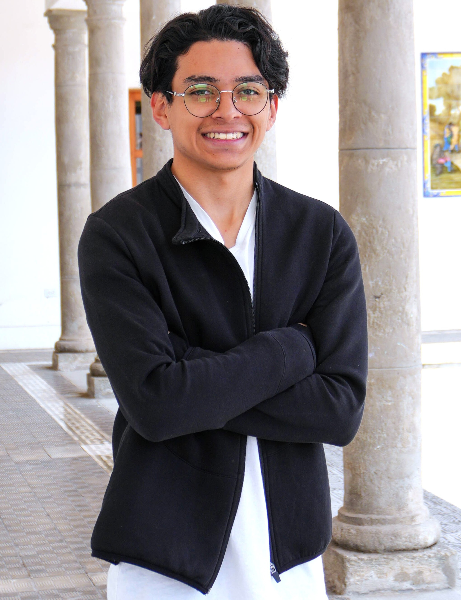
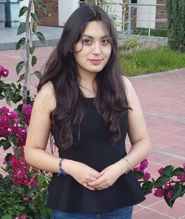
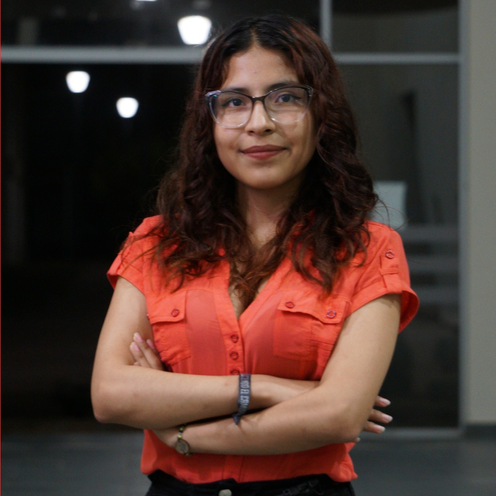

Presidencia
Presidencia
Edwin Ezequiel Hurtado Almeida
Representante legal de la AEMCiCD. Coordina la dirección general, preside sesiones, impulsa proyectos institucionales y articula la representación estudiantil ante actores internos y externos.
La Asociación de Estudiantes de Matemática, Ciencias Computacionales y Ciencia de Datos de la Universidad Yachay Tech (AEMCiCD) representa, acompaña y fortalece a su comunidad estudiantil mediante actividades académicas, sociales, científicas, tecnológicas e institucionales.
Una organización estudiantil de carácter académico, social y tecnológico.
La AEMCiCD es una organización estudiantil autónoma, sin fines de lucro y con personería jurídica en Ecuador. Su ámbito de acción es educacional y su trabajo se orienta a representar a estudiantes de Matemática, Computación y Ciencia de Datos, promover espacios de participación y desarrollar actividades que fortalezcan la vida académica, científica, cultural y social de la comunidad.
La asociación actúa como un canal de organización estudiantil, diálogo institucional, apoyo entre pares, gestión documental, impulso de proyectos y construcción de comunidad. Su sede referencial se encuentra en el campus de la Universidad Yachay Tech, en Urcuquí, Imbabura, Ecuador.
Líneas de acción que guían nuestras actividades y proyectos.
Promovemos seminarios, grupos de estudio, tutorías internas, cursos, concursos y espacios de fortalecimiento académico para estudiantes.
Impulsamos actividades de convivencia, integración, apoyo entre pares y construcción de redes estudiantiles dentro de la Escuela.
Canalizamos necesidades, propuestas y problemáticas estudiantiles ante instancias internas o externas, conforme a los fines de la asociación.
Desarrollamos soluciones digitales para elecciones, gobernanza, actas, resoluciones, documentación y transparencia institucional.
Organizamos y apoyamos actividades científicas, académicas y culturales que conectan a estudiantes, docentes e instituciones aliadas.
Promovemos el orden documental, la trazabilidad de decisiones y la continuidad institucional entre diferentes periodos de representación.
Equipos de trabajo que sostienen la gestión ordinaria y los proyectos de la asociación.
Levanta necesidades académicas, articula representantes de carrera y promueve tutorías, charlas, grupos de estudio y actividades de fortalecimiento académico.
Coordina actividades de integración, vínculos con otras organizaciones, colaboración institucional y relacionamiento con actores internos o externos.
Organiza bases de datos, asistencia, certificados, convocatorias, registros, logística de eventos y documentación operativa de la asociación.
Apoya la administración de recursos, presupuestos, informes económicos, registros financieros y sostenibilidad de actividades institucionales.
Gestiona imagen institucional, redes sociales, difusión de actividades, recursos de marketing y comunicación pública de la asociación.
La Junta Directiva puede crear equipos o comisiones especiales para ejecutar iniciativas académicas, tecnológicas, sociales o institucionales.
Periodo 2026–2027. No se publican números de identificación personal en este sitio.
Presidencia
Representante legal de la AEMCiCD. Coordina la dirección general, preside sesiones, impulsa proyectos institucionales y articula la representación estudiantil ante actores internos y externos.

VicepresidenciaApoya la coordinación estratégica, el relacionamiento institucional y la supervisión de actividades internas y externas, sustituyendo a Presidencia cuando corresponda.

Secretaría GeneralOrganiza actas, convocatorias, archivo documental, registros institucionales y soporte legal-documental para la continuidad y trazabilidad de la asociación.

TesoreríaGestiona registros financieros, presupuestos, custodia de recursos, informes económicos y sostenibilidad operativa de actividades y proyectos institucionales.
Coordina la imagen pública, difusión de actividades, redes sociales, piezas gráficas y comunicación institucional hacia estudiantes, aliados y comunidad externa.
Registro público de continuidad institucional.
Periodo de formalización jurídica, fortalecimiento documental, consolidación de Votia como proyecto institucional y organización de nuevas líneas de actividades académicas, tecnológicas y comunitarias.
La asociación se encuentra organizando su archivo histórico para publicar, cuando corresponda, información verificada sobre directivas, proyectos e hitos anteriores.
Iniciativas impulsadas o acompañadas por la asociación.
Plataforma institucional para elecciones digitales, gobernanza, asambleas, sesiones de junta directiva, asistencia, votaciones, actas, resoluciones y archivo documental.
Espacio de encuentro, estudio, integración y apoyo entre estudiantes de distintas carreras y semestres.
Actividades de divulgación, acompañamiento académico y fortalecimiento de habilidades en matemática, computación y ciencia de datos.
Iniciativas orientadas a conectar estudiantes, docentes, asociaciones, instituciones y comunidades académicas nacionales o internacionales.
Votia es una plataforma tecnológica desarrollada para apoyar procesos de participación, elecciones, asambleas, votaciones, generación de actas, resoluciones y trazabilidad documental. Su finalidad es fortalecer la transparencia, continuidad y organización institucional de asociaciones estudiantiles y organizaciones afines.
Espacio para colaboración académica, tecnológica, social e institucional.
La AEMCiCD mantiene abierta la posibilidad de colaborar con instituciones académicas, organizaciones estudiantiles, empresas, fundaciones y actores externos interesados en apoyar actividades académicas, científicas, culturales, sociales y tecnológicas.
Información pública institucional y documentos de referencia.
AEMCiCD cuenta con personería jurídica concedida mediante Resolución Nro. MINEDEC-CZ1-2026-00566-R.
Oficio de aprobación y registro de la directiva de la AEMCiCD para el periodo 2026–2027.
Documento estatutario que regula la organización, fines, estructura y funcionamiento general de la AEMCiCD.
Normativa interna complementaria para la organización, operación y gestión institucional de la asociación.
Constancia de registro de la organización en el Sistema Unificado de Información de Organizaciones Sociales.
La AEMCiCD promueve la organización de actas, resoluciones, informes y documentos públicos revisados para fortalecer la rendición de cuentas.
Canales institucionales para consultas, colaboración y comunicación pública.
Vía Yachay s/n, Campus Universitario, Universidad Yachay Tech, Urcuquí, Imbabura, Ecuador.